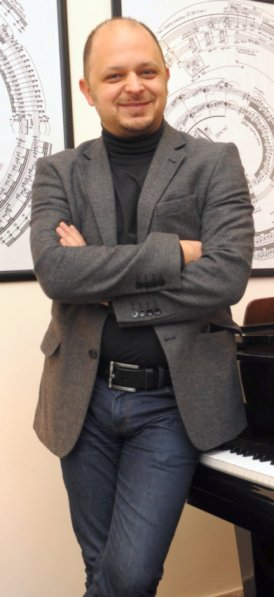

|  |
Toros Can has studied at State Conservatory in Ankara, Royal College of Music - London, University of Arizona, Meadows School of the Arts Southern Methodist University and Yale University. His tutors include İlhan Baran, Guherdal Cakırsoy, Peter Katin, Edwin Roxburgh, Tedd Joselson, Peter Frankl, Joaquin Achucarro, and Nicholas Zumbro. Can performed in the Masterclasses of Alexander Jenner, Jan Wijn, Gyorgy Sandor, Boris Berman and Claude Frank. In 1998, Can won the Fondation Yvonne Lefebure, Chevillion Bonnaud-Fondation de France and Blanche Selva (1st) prizes in the Orleans International 20th Century Piano Competition in France. His other awards and prizes include Green Valley, Quilter, John & Jean Redcliffe Maud, Federation of Turkish American Associations Award, Charles S.Miller, Joel Estes Tate, Constant & Kit Lambert, Else & Leonard Cross Charitable Trust, Phillis Wright, Marjorie & Arlond Ziff, John & Jean Redcliffe Maud and 2002-Art Award of Anadolu University. His four recordings of Ligeti, Hindemith, Crumb and Purcell won Diapason d'Or twice, Diapason 5, Le Monde de la Musique-CHOC, Telerama-ffff, Repertoire-9, Repertoire-10, Observateur-3, Piano le Magazine-Coup de Coeur and Classica-5. Can has extensively performed in Turkey, France, USA, England, the Netherlands, Italy, Austria, Germany, Singapore, Romania, Kosovo, Bulgaria, Switzerland, Poland and Georgia. He has been invited to perform at Salle Cortot, Theatre du Chatelet, George Enescu Concert Athenaeum, Theater aan het Vrijhof, Invalides and St-Martin-in-The-Fields. Can appeared at the international festivals such as Munster Music Festival, Saint-Riquier Festival, International Istanbul Music Festival, Holland Music Sessions, Cite de la Musique-Paris, and La Roque d'Antheron Piano Festival. Toros Can works under OdeonArts management. |
|
|